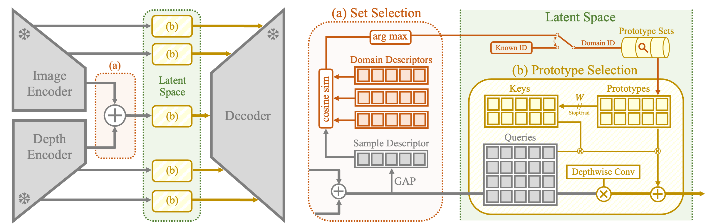

<div class="col-lg-12">
    <div class="row d-flex flex-wrap align-items-center">
      <div class="col-md-3">
           
      </div>
      <div class="col-md-9">
        <h3>
          <strong>ProtoDepth: Unsupervised Continual Depth Completion with Prototypes</strong>
          <strong> [</strong><a href="https://arxiv.org/pdf/2503.12745" target="_blank">PDF</a><strong>] </strong>
        </h3>
        <p style="line-height:22px; font-size: 18px;" class="mt-0">  <strong>Patrick Rim</strong>, Hyoungseob Park, S. Gangopadhyay, Ziyao Zeng, Younjoon Chung, Alex Wong
          
        <br>IEEE/CVF Conference on Computer Vision and Pattern Recognition (CVPR) 2025</p>
      </div>
      <hr class="mt-0 mb-0">
    </div>
  </div>
